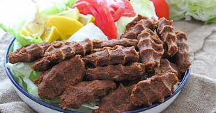

Etsiz Çiğ Köfte - Nefis Yemek Tarifleri
Gerekli malzemeler
- 1 kg Esmer köftelik bulgur eğer yoksa normal ince bulgur da olabilir.(7.5 su bardağı)
- 4 bardağı kaynar su.
- 3.5 yemek kaşığı domates salçası.
- 3.5 yemek kaşığı biber salçası.
- Yarım çay bardağı pul biber
- 1 çay bardağı isot.
- 1 çay bardağı toz kırmızı bardağı.
- 5 adaet rendelenmiş sarımsak.
- 1 su bardağı sıvı yağ ve zeytin yağı karışık.
- yarım çay bardağından biraz fazla nar ekşisi.
- 4 adet kuru soğan eğer büyükse 2 adet ( rendelenecek suyu sıkılacak )
- 1 yemek kaşığı Tuz ( İsteğe göre ayarlayabilirsiniz)
- Yarım çay bardağından biraz fazla sumak
- 1 yemek kaşığı Tuz ( İsteğe göre ayarlayabilirsiniz)